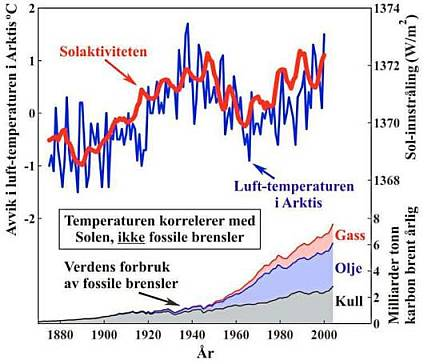

Deutsche
Startseite Architektur-Magazin "Altbau und Denkmalpflege Informationen"
Deutsche
Startseite Architektur-Magazin "Altbau und Denkmalpflege Informationen"  Den STORE Engelsk Versjonen - med mange lenker til min poster på forskjellige engelske fora (Hus forum, hjem & hage, bolig, bygge selv)
Den STORE Engelsk Versjonen - med mange lenker til min poster på forskjellige engelske fora (Hus forum, hjem & hage, bolig, bygge selv)  Heating Costs Saving and Health Protection by the Interior Room Surface Heating System +++
Low-cost Repair, Renovation + Refurbishing of your old House
Heating Costs Saving and Health Protection by the Interior Room Surface Heating System +++
Low-cost Repair, Renovation + Refurbishing of your old House 

 Tips, tricks og rådgivning for ejere af gamle huse, kirker og paladser
Tips, tricks og rådgivning for ejere af gamle huse, kirker og paladser Dipl.-Ing. Arkitekt Konrad Fischer
Dipl.-Ing. Arkitekt Konrad Fischer
 Er dit byggeri gået i vasken? Er pengene tabt? Er bygningen fyldt med skimmel, børnene syge, er
øjne og fingre blevet blå?
Er dit byggeri gået i vasken? Er pengene tabt? Er bygningen fyldt med skimmel, børnene syge, er
øjne og fingre blevet blå?
Det må ikke ske.
Velkommen - tak fordi du kiggede forbi. Disse sider er informationssider baseret på spørgsmål og problemer omhandlende vedligeholdelse af gamle bygninger, hensyntagen, beskyttelse og restaurering af historiske monumenter med lavt forbrug af energi samt konservering af værdifulde kunstværker. Siderne er mest på tysk, dog vil der være nogle danske sider.
Og hvorfor nu sider på dansk? Jeg har haft flere arkitektpraktikanter fra Det Kongelige Kunstakademi - en Arkitektskole og har holdt forelæsninger i Danmark og Sverige om mit restaureringsarbejde og grundlæggende arbejdsmetoder. Herigennem har jeg fået god faglig kontakt til Danmark. På den måde fik jeg også indblik i de danske restaureringsmetoder, hvis da sådan noget findes. Jeg kunne herigennem fastslå at der i Danmark sker de samme problemer og de samme frygtelige fejl. Med samme katastrofale resultater og huller for såvel bygningen og bygherrens pengekiste, eksempelvis (tryk billed-links):
 (1)
og
(1)
og  (2)
og
(2)
og  (3)
og
(3)
og  (4)
og
(4)
og  (5)
og
(5)
og  (6a)
og
(6a)
og  (6b)
og
(6b)
og  (7)
og
(7)
og  (8)
og
(8)
og  (9)
og
(9)
og  (10)
og
(10)
og  (11)
og
(11)
og  (12)
og
(12)
og  (13)
og
(13)
og  (14)
og
(14)
og  (15)
og
(15)
og  (16)
og
(16)
og  (17)
(17)
Billedeforklaring: (1), (2), (3), (4): Ødelagt overflade og skorpe ved brug af silikatisk fiksering; (5) Skimmel i et badeværelse; (6a) Ikke opstigende fugt (6b) Salt-udslet efter horisontal isolering med salt-indeholdende injektionsmiddel (6 a,b, på dansk); (7) Alger på varmeisolering, fra: Bautenschutz+Bausanierung, Zeitschrift für Bauinstandhaltung und Denkmalpflege, Januar 2002, Fotograf: Hochschule Wismar; (8) Våd isolering i haven, fra: "Bauhandwerk mit Bausanierung 2/01", Fotograf: Helmut Pätzold; (9) Våd varmeisolering udenfor og skimmel indenfor; (10) Eksploderet varmeisolering, fra: "Schadensbilder aktuell", Bayerische Brandversicherung München; (11) Cementmørtel, mursten og frost; (12) Cement og natursten; (13) Mørtelbindemiddel på ny facade; (14) Syntetisk farve på historisk facade; (15) Syntetisk farve på et vindue; (16) Syntetisk farve på stakit; (17) Vindue-teknik
På alle disse sider er der mange tekniske, nyttige og nogengange også kontroversielle informationer at hente. Takket været min praktikant Ulrik Overby, søn af min kære kollega og restaureringsarkitekt Jørgen Overby, har det været muligt at skabe nogle informationer på dansk (hvilket jeg bedre forstår ved læsning end ved at skrive og tale sproget).
Hvis de informationer som du søger ikke findes på dansk, så er det muligt at finde følgende emner på tysk: Restaurering, konservering, tekniske og historiske bygningsundersøgelser, arkæologi, kalk, kalkning, mørtel, fugemørtel, puds, murværk, beton, kalium silikat, slotte samt samarbejde med embedsmænd, statstilskud, bedrageri, korruption, økonomi og andre økonomiske og juridiske emner) eksempelvis:
- Min side "Borge/slotte - Burg/Schloß" med mange link til slotte og borge i hele verden,

- Min side "Opstigende fugt
( på
dansk)". Her vil du finde alt hvad man kan gøre
forkert med fugtigt murværk i kældre og fundament, facader og puds.
på
dansk)". Her vil du finde alt hvad man kan gøre
forkert med fugtigt murværk i kældre og fundament, facader og puds.
- Min side "Skimmel - Schimmel" de forfærdelige byggeresultater som ses ved moderne byggemetoder med idiotisk tætning, varmeisolering og opvarmningsmetoder.
- Min side "Den store løgn om klima forandringer, drivhuseffekt og menneskabte verdens opvarmning - Die große Lüge mit dem Klimawandel, dem Treibhauseffekt und der menschengemachten globalen Erwärmung" - Verdens dødsdom eller hysteri? Tror du på menneskeskabt CO2 påvirker globale klimaet? Men: "IPCC har fra begyndelsen fået [politisk] licens til at bruge en hvilken som helst metode, der blev anset for nødvendig, til at skaffe "bevis" på, at en øget mængde CO2 var skadelig for klimaet; selv om dette omfattede manipulation af tvivlsomme former for data, samt brugen af "den offentlige mening" frem for videnskab til at "bevise" deres påstand." (Dr. Vincent Gray, UN IPCC scientist) Kilde
Og: e24.no/makro-og-politikk/article2182808.ece:

- Min side "Svindel med varmeisolering - Der Schwindel mit der Wärmedämmung" beskrives hvordan den energisparegale byggeherre ved intelligente rådgiver og kloge byggeforskrifter bliver tvunget til at fornægte sit hus og sig selv godt helbred. Med varmeisolering som umuligt kan isolere varme, men som bliver fugtig og moseagtig og fyldt med skimmel.
 Billedtekst: "Et termografibillede af facaden afslører
store varmeudslip. Målingerne er ved udetemperatur p 10C, vindstille
med ukendt rumtemperatur. Årsagen til de viste varmeudslip er, at
vinduesbrystning, -overligger og -false er udført i massivt murværk".
Fra Byg-Tek 25.10.04 af journalist Michael Rughede.
Billedtekst: "Et termografibillede af facaden afslører
store varmeudslip. Målingerne er ved udetemperatur p 10C, vindstille
med ukendt rumtemperatur. Årsagen til de viste varmeudslip er, at
vinduesbrystning, -overligger og -false er udført i massivt murværk".
Fra Byg-Tek 25.10.04 af journalist Michael Rughede.
Dette er primitiv propaganda for blower door-metode/tættere huse og maksimal isolering.
Hvor dumme tror Michael at danskerne er?! Selvfølgelig viser termografien kun varmeafstraaling af den massive
syd-tegl-facade ved middagstid. Denne varme kommer naturligvis kun gennem energi-indstrålingen ved sollys.
Vestgavl-væggen af hjørneværelset har endnu ikke fået meget solskin og forbliver derfor
blå-grøn-kold. Eller tror danskerne at husejeren har et specielt opvarmningssystem for
hjørneværelset som kun gør syd-væggen varm? Michael, Michael, hvorfor benytter du de dummeste
tyske svindel-tricks for at tømme de danske husejers lommer for penge?
Videre information

 - Min side "Rumhylster-temperering"
(
- Min side "Rumhylster-temperering"
( på
dansk) beskrives det falske og rigtige rumopvarmnings-system:
Energispilende varmesystem med rumluftophedning og rumluftforurening,
astmasyge børn, influensa udbrud ved begyndelsen af varmeperioden,
fugtkondens og skimmmel i den køldige ydermur. Eller mild opvarmning med
sparsom varmestråling, med mindre teknik, altid tørt
'rumhylster', sund, kølig og ren luft i rummet.
på
dansk) beskrives det falske og rigtige rumopvarmnings-system:
Energispilende varmesystem med rumluftophedning og rumluftforurening,
astmasyge børn, influensa udbrud ved begyndelsen af varmeperioden,
fugtkondens og skimmmel i den køldige ydermur. Eller mild opvarmning med
sparsom varmestråling, med mindre teknik, altid tørt
'rumhylster', sund, kølig og ren luft i rummet.

Neuenburg Slot i Sachsen-Anhalt. Arkitektonisk og ingeniørmæssigt arbejde som er blevet udført
af mit firma siden 1991. (Ed Kane's Info roadstoruins.com)
- Mit foredrag ved RILEM seminaret "Karakteristik af gammel mørtel under hensyntagen til deres restaurering", Paisly Universitet, Skotland, Maj
1999: "Traditionel håndværk med moderne kalkmørtel - Er det muligt at praktisere?"
(english  )
De vil også finde nogle tiltalende 'engelske' links til Skotland, bygningsundersøgelser, konservering og mine
skitser
fra RILEM ekskursionen til Stirling Slot og historiske kalkovn i Charlestown Fife mm.
)
De vil også finde nogle tiltalende 'engelske' links til Skotland, bygningsundersøgelser, konservering og mine
skitser
fra RILEM ekskursionen til Stirling Slot og historiske kalkovn i Charlestown Fife mm.
- Erfarenheter av luftkalk och hantverk vid restaureringar i Tyskland Gotland Seminarium: Hantverk & Utbildning -
Nordiskt Forum För Byggnadskalk, Högskolan på Gotland, Visby 31.8.2001 (på svenska
 )
)

Zisterzienser Abbedi Waldsassen.
Facaden er restaureret med ren kalk samt kalk-kasein-vand uden varmeisolering. Det er meget
billigere og bedre end at ødelægge facaden med cement, syntetiske materialer eller vand glas/kalium silikater.
- Min side 'Flere Råd - Weitere Beratung' med mange link til interessante web-adresser for arkitekter, håndværkere og husejere. Nogle af disse sider er på engelsk eller kun på engelsk.
- Min side 'Forfatterreference - Autorenreferenz' viser mine biografiske oplysninger, nogle af mine projekter og links til venner og foreninger som jeg er arrangeret i. Nogen af siderne kan have engelske udgaver

- Min side 'Bygningsmaterialer - Baustoffe',
her vil jeg give det mest kritiske synspunkt på moderne byggemetoder,
hvor ofte gamle bygninger bliver ødelagt. Der vil være referencer
til nogle sider hvor der vil også vil være engelsk information.
Informationer om kalk, tegl, mørtel og mursten findes på:
- Luftkalkmørtel og dennes aktuelle forbedringspraksis
- Luftkalkmörtel und seine aktuelle Vergütungspraxis
- Fornyelse eller vedligeholdelse af den gamle puds - Erneuerung oder Erhalt von Altputzen
- De hyppigste fejl med Luftkalkmørtel, kalkpuds og kalkpåmaling - Die häufigsten
Fehler bei der Anwendung von Luftkalkmörtel, Kalkputz und Kalkanstrich
- WTA-certificeret saneringspuds til istandsættelse af fugt- og saltbelastede pudsflader,
til vægflader med høj fugtighedsbelastning i ældre byggeri, i sokkelområder og i kældre???
- Luftkalkrecepter for murværk, indre og ydre puds, gulv, tegltag, fugning og
injektionsmørtel - Luftkalkrezepturen für Mauerwerk, Innen- und Außenputze, Estrich,
Dachdeckerbedarf, Verfugung und Verpressung
- Kalkpuds og mørtel i fredede bygninger - Kalkputz und Mörtel am Baudenkmal
- Byggematerialier før vægge ved istandsættelse - Wandbildner im Altbau
 .
.

Barok bygning før restaurering og efter restaurering
med traditionelle og økonomiske metoder, udført af Arkitektur-
og Ingerniørfirma Konrad Fischer
- Min side 'Holdbar Istandsættelse - Erhaltende Instandsetzung' viser med tekst og billeder hvordan man restaurer gamle bygninger med traditionelle, reversible og billigere metoder end de 'moderne' metoder som normalt bliver brugt.
- Min side 'Økonomi og restaurering - Wirtschaftlichkeit' og 'Finansiering - Finanzierung' omhandler økonomiske og finansielle spørgsmål der hører sammen restaureringsarbejde.
- Hvis det virkelig er nødvendigt - så findes min side byggeråd, hvor du kan få købe min rådgivning over telefon, e-mail eller i dit gamle hus (i tysk eller english). Men vær forsigtig: Nogle råd kan man altid få. Overalt og delvis gratis. Eksempler:byggeri.dk og www.gamle-huse.dk meget mere. To rådgivere, tre løsningsforslag, fire fejlslag. Vished fra byggeproduktsfremstillere og hans handelsrepræsentant, kloge håndværkere, intelligente byggesagkyndige, gør-det-selv folk, byggeteknikere uden arbejde, akademiske teoretikere, nyuddannede endda byggevidende onkler og tanter. Eller?
Tøv desuden ikke med at bruge en af følgende online engelsk oversættere for bedre at forstå mine tyske sider:
Anbefales: Online oversættelse af alle - og hele - websider på forskellige sprog: ***Online-Translator***
Skuffet? Så prøv: Online-Translation
German-English and others
- Andre mere eller mindre interessante / nyttige links:
Flere konservering og restaurerings informationer fra museer, handværkere, arkitekter, fredningsstyrelser osv. fra hele skandinavien: Raadvad/ <> Svenska Byggnadsvårdsföreningen